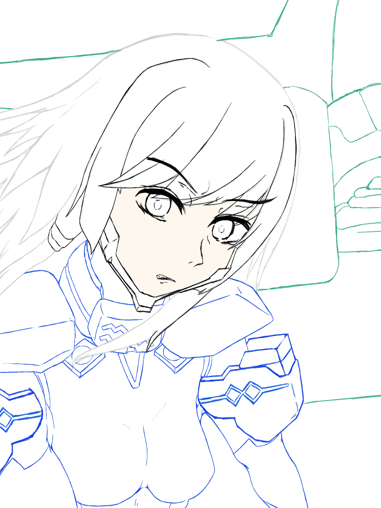

俺とマブラヴ オルタネイティヴ
自分語りを多量に含んでいるので＊閲覧注意
俺とマブラヴとのファーストコンタクトは、中学時代にまで遡る。当時、友達と進撃の巨人で盛り上がってた日、ネットサーフィンに勤しんでいるとこんな記事を見つけた。「進撃の巨人には、元ネタがある」。作者自身が「パクった」と公言し、その作品を崇めるような文章が書かれていた。
当時の俺にとって、「進撃の巨人」はグロをメインに扱う作風として人生で初めて視聴した作品だったり、ドイツ語をふんだんに用いているクールなOPが流れたりで厨二心を最高にくすぐる傑作としてお墨付きを出していた。そして、当時俺の周りにいたアニメ・漫画大好き同級生達も大体進撃が好きだった。
そんな作品を生み出した人間が声を大にして絶賛する作品……当時の俺にとって「マブラブ」という作品に興味を引くのに十分な状況だった。いつかやってみてー。そんな感想を口にしたのち、厨二まっさかりな俺はまた別なコンテンツに興味を向けていた。要するに、当時は名前だけ知って、それっきりだった。14のガキにとって、梅雨入り直前の空模様並みに興味の移り変わりは激しかったわけだ……。
中三の、卒業間近の冬。別に本気で受験勉強するわけでもなく、ただただ周りの人間と同じように特に行かない理由もなかったので親に払ってもらって通っていた学習塾に足を運ぶ。そんな日常に辟易としている2016年の1月。そう、マブラヴ大好きな皆さんならご存知のあの作品が放映された。そう、「このすば」である。
いや、違う（無駄なツッコミ）。「シュヴァルツェスマーケン」が、放映されたのだ。当時、厨二病丸出しの俺は、「ちょっと古い」アニメ・ラノベ(2005年～2012年くらいにやってたコンテンツ)にご執心だった。15歳にして、当時放送しているアニメに冷笑していた。まさに、現代(2026年)のネットで囁かれる「大冷笑時代」に一人生きていたのである。そんな当時の俺にとって、2003年のエロゲ「マブラヴ」・2006年のゲーム「マブラヴオルタネイティヴ」が原作となる「シュヴァルツェスマーケン」は、興味ど真ん中のはずだった。
そんな時、当時そこそこアニメの話ができる友達がいた俺に対して、一人がそう口に出した。「このすばおもしれーぞ」。冷笑全開の俺は、一瞥に付した。ったく、今期は見るもんねーと思ってたのによw。しかし、そいつが言うにはめっちゃおもれーらしいから見てみた。めっちゃ面白かった。2016年冬アニメは、このすばだけ見てた。そして、おそらく厨二時代に「マブラヴ」に触れる最後のチャンスだった作品に、俺はついぞ相対することができなかったというわけだ。
そんなこんなで、何も考えず友達が一人もいない自称進学校に入学。正直、最初から高校生活に躓いていた。そう、俺は生まれてこの方自分から話しかけて友達を作ったことがなかった。コミュ障で、プライドだけ高い、そんな厨二丸出しのガキだった俺にとって、知らねー奴に話しかけるという行動はめちゃくちゃハードル高かった。
5月のゴールデンウィーク、景観豊かな自然教室で親睦を深め、自称進学校故に課題とかめっちゃ多いからそれに耐えれるような根性つけていこうぜイベントが起きるまで、俺は教室の誰とも話すことができなかったのだ。まさに、ボッチ丸出しのまま俺の高校生活は幕を開けたというわけだ。厨二病丸出しだから友達出来ないんだろと今になって思う(悲しい)
（なんやかんやあって二浪したのち地元の公立大の工学部に入る）。大学四年の12月になる。当時の俺は、留年に酷くおびえていた。一応、四年の後期にして、卒業研究以外の単位を取り終えてはいた。2浪してるもんだから、1年でも留年したら新卒じゃなくなる……。まともな社会人になって親孝行をもくろんでいた自分にとって、人生最大級の脅威だったともいえる。それでも、俺は本気で努力できなかった。毎日研究室に行ったり、週一回の教授の授業には出席していた。でも、本気で勉強することは結局なかった。2時間近い通学時間だったり、周りの同級生は2年下だったり、何かと理由をつけて俺は本気になれていなかった。今思えば、もっと勉強しとけばよかったと本気で思う。そんなうだつの上がらない毎日の中、Steamで出会ったのがマブラヴなのである。
マブラヴプレイ状況（プレイ順）
| 作品名 | プレイ状況 | プレイ時期 | 備考 |
|---|---|---|---|
| マブラヴ(EXTRA編&UNLIMITED編) | クリア | 2024年12月～ | 初めて触った「マブラヴ」。大学生活の卒業間近、卒論に追われる中ずっと気になっていたのでSteamで購入。 |
| マブラヴ オルタネイティヴ | クリア | 2024年12月～ | |
| マブラヴ アンリミテッド ザ・デイアフター | クリア | 2025年6月～ | |
| マブラヴ オルタネイティヴ トータル・イクリプス | クリア | 2025年7月～ | |
| シュヴァルツェスマーケン 紅血の紋章/殉教者たち | プレイ中 | 2026年5月～ |
個人的好きなキャラNo.3-篁唯依-

譜代武家「篁家」現在当主。数年前、衛士訓練学校で寝食を共にした級友とともに、戦火に今まさに燃え尽きようとする帝都京都で防衛戦に参加。訓練兵の手腕では人類の宿敵BETAに叶うはずもなく、親友を目の前で惨殺され、「撃ってよ、唯依」……、最期の望みを弱さ所以に聞き入れることもできずただ震えるばかりでいた。心身を蝕むトラウマを抱える。
あの惨劇から幾数年、戦術機を駆り戦場で躍進を重ね、中尉にまで階級を上げるなど譜代武家として殿下に恥じない振る舞いを続ける。しかし、今だ心の傷は癒えないでいる。それでも、篁家当主として、父に恥じない人間になるため、己の一振りを磨き続けていた。そんな時、突然国連軍開発チームへの出向を命じられる。それは、事実的な前線からの追放でもあった。ユウヤ・ブリッジスからつけられた呼称は「ジャパニーズドール」。